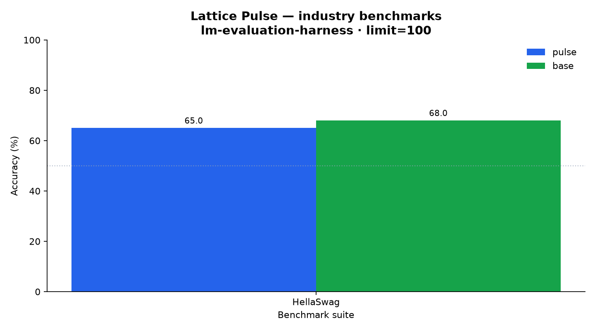
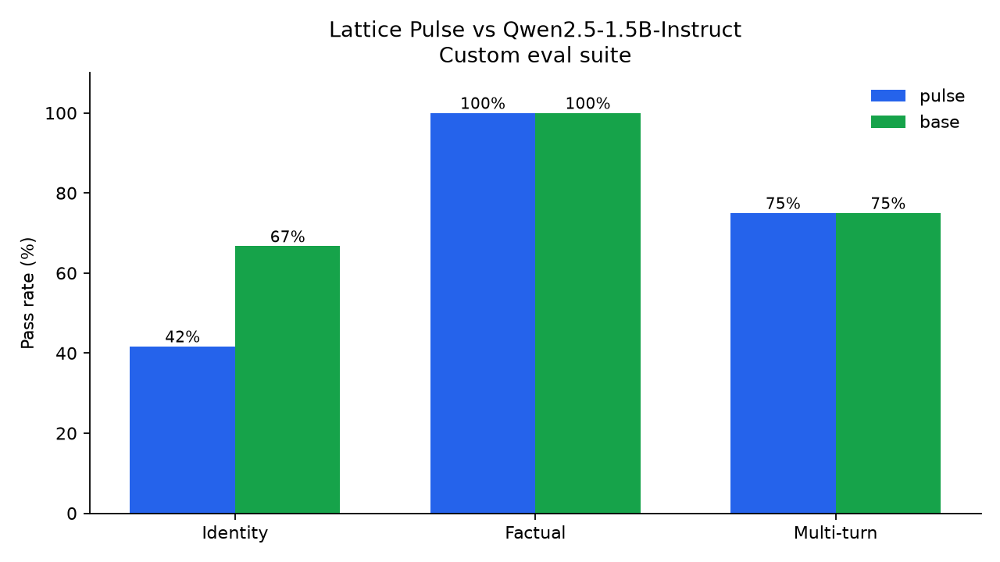

Lattice Pulse · retired
Retired from the lineup — Pulse's Lattice identity lived in the system prompt the site sent, not in its weights. Without it, the model fell back to its base personality (0/8 identity). Superseded by Spark, which carries identity in its weights. These pages remain as the record of what we learned.
Pulse vs Qwen2.5-1.5B (industry suites)
Scored with lm-evaluation-harness on standard model-card suites.

Pulse vs Qwen2.5-1.5B (custom Lattice eval)
Bespoke eval covering Lattice identity, factual spot-checks, and multi-turn coherence — the things the industry suites don't measure.

Where Pulse sits in the lineup
Pulse and Pulse 2 both rely on the system prompt for identity. Spark was built to fix exactly that. Compare them head-to-head on the Spark benchmark page.